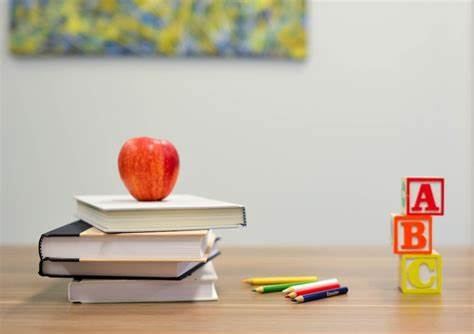

The SRI global HIGHSCHOOL was established in the year of 2021, with a need for imparting education to young minds and making them future ready. Steered by the cause of pioneering quality education in the drought effected area of Wanaparthy District, the group embarked on this journey by providing Day Scholar and Residential schooling facilities for the children of Kothakota town.
A school is an educational institution designed to provide learning spaces and learning environments for the teaching of students under the direction of teachers. Most countries have systems of formal education, which is sometimes compulsory.[2] In these systems, students progress through a series of schools. The names for these schools vary by country (discussed in the Regional terms section below) but generally include primary school for young children and secondary school for teenagers who have completed primary education. An institution where higher education is taught is commonly called a university college or university.
Education is everyone’s right and it is also what separates us from other living beings. For most children, their education begins at home and then continues in school. A school is an educational institution designed to provide a safe, learning environment for children under the direction of teachers. School is a child’s second home, they spend most of their childhood in these educational institutions. So, learn more about school and school life with this essay on school. Along with providing an education, a school and its educators also work towards building a child’s personality. It provides them a platform to learn, it also improves their social skills, cognitive skills, and aids in their psychological and mental growth. This essay on school explains in detail the importance of going to school, the skills it helps kids develop, and the significance of school life.
